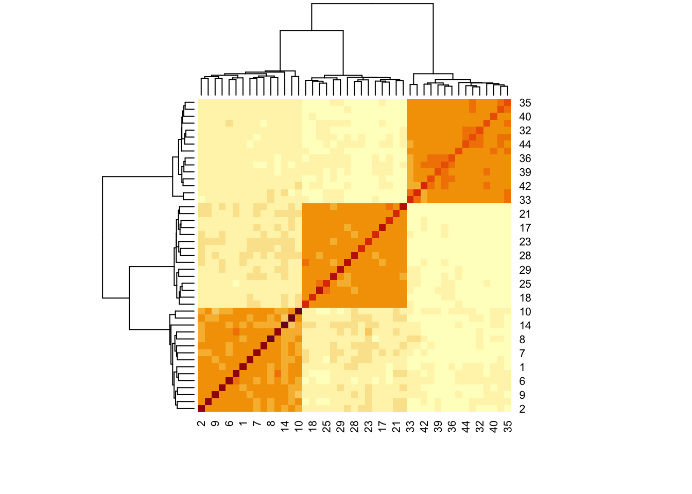
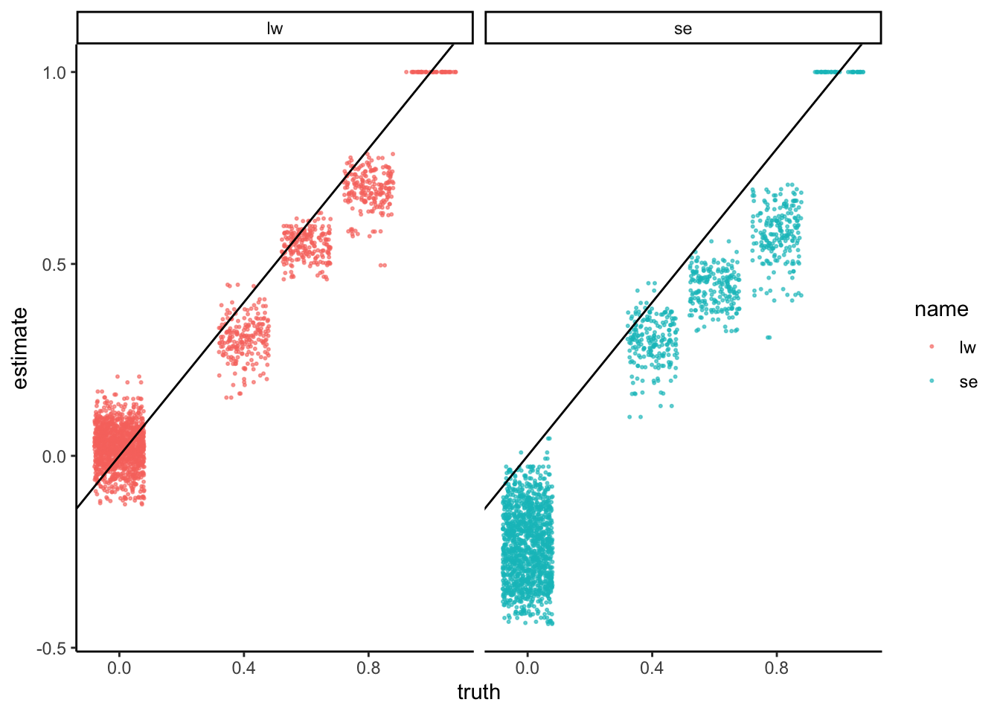

4.3 Block Covariance
Let’s replace the current copula correlation structure with one from a block
diagonal matrix. In this example, the off-diagonal correlations are 0.6. We can
use mutate_correlation to swap this new correlation matrix into our earlier
simulator.
rho <- c(0.4, .6, 0.8) |>
map(~ matrix(., nrow = 15, ncol = 15)) |>
Matrix::bdiag() |>
as.matrix()
diag(rho) <- 1
simulated <- sim |>
mutate_correlation(rho) |>
sample()
x <- t(assay(simulated))Let’s first look at the SpiecEasi covariance estimate. This is a variant of the
graphical lasso that is designed to be well-adapted to microbiome data. The good
news is that it does warn that the default choices of \(\lambda\) are too large,
which is correct in this case. Unfortunately, it took a while to get this
answer, and we had already been quite generous in allowing it to fit 10 choices
of \(\lambda\).
rho_se <- spiec.easi(x, nlambda = 10, pulsar.params = list(rep.num = 1)) |>
getOptCov() |>
as.matrix() |>
cov2cor()
heatmap(rho_se)
Let’s instead use the Ledoit-Wolf estimator on the log-transformed data. The results make much more sense.

Since color comparisons are difficult to evaluate precisely, we can also make a scatterplot comparing the different covariance estimators.
data.frame(truth = c(rho), se = c(rho_se), lw = c(rho_lw)) |>
pivot_longer(-truth, values_to = "estimate") |>
ggplot() +
geom_jitter(aes(truth, estimate, col = name), alpha = 0.6, size = 0.4) +
geom_abline(slope = 1) +
facet_wrap(~name)